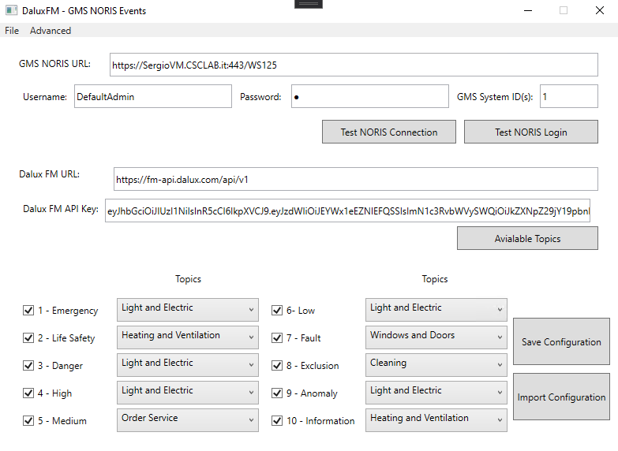

Configure Dalux FM Event Manager Parameters
- After the event manager installation, the DaluxFMConfigurator.exe application is available in the installation folder.
- Run DaluxFMConfigurator.exe.
- The Dalux FM Configurator window displays the File page, which includes three sets of configurable fields:
- In the upper part, the Desigo CC NORIS web site access parameters.
- In the middle, the Dalux FM access parameters.
- In the lower part, the event category selectors. 
- Configure the Desigo CC NORIS web site access parameters:
- In GMS NORIS URL, enter the web service application URL that you configured in SMC (URL field from the Web Application Details).
NOTE: It is recommended to use HTTPS for secure communications.
- In Username and Password, enter the credentials of a Desigo CC user that has scope visibility on the events to transmit, and on the Dalux FM System object (see Dalux FM Events).
- In GMS System ID(s), typically set to 1. It may have another value for distributed systems or special user setup.
NOTE: Use the test NORIS pushbuttons to verify the connection and the login. To run the test, click the button, and a success or failure response appears on the button itself. - Configure the Dalux FM web site access parameters:
- In Dalux FM URL, enter the Dalux FM web site URL.
NOTE: It is recommended to use HTTPS for secure communications.
- In Dalux FM API Key, enter the API key string as defined by the Dalux FM system. - Select Get Topics to associate each preconfigured topic with a corresponding event category in Desigo CC.
- (Optional) Configure the event categories. Select the check boxes that correspond with the event categories that you want to be transmitted, and deselect the others.
- Select Save Configuration, browse to the event manager folder and select Save.
- The EventsManagerSettings.config file is created or updated. The file contains the configuration parameters for the event manager service to use.
NOTE: Use the Import Configuration button to select a valid EventsManagerSettings.config file and get the previous configuration settings from it.